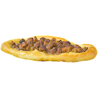

Pastramalija:

But what is Pastramalija?
Pastramalija is a Macedonian dish, made with slightly chewy dough that is absolutely delicious, it's made with eggs inside the empty space in the dough in the middle, it marinates the dough and makes it super delicious, on top of the eggs is where the meat is, usually pork or lamb, generally you can ask it to be with meat of your choosing but thats how its traditionally eaten
Ingredients
-
Olive Oil: A little sauteing the pork, and a little more for sprinkling
-
Pork: For this version of MAcedonia pizza, i used the pork tenderloin, cut into bite sized pices. Pork chops would also be good to use.
-
Salt and Pepper
-
Spices: Paprika and cayenne pepper add a flavor and a little heat. If you would like to omit the cayenne, that's fine, too!
-
Garlic: I like to use fresh minced garlic, but in a pinch, garlic power would do too!
-
Pizza Dough: Store bought pizza dopugh makes this recipe fast! If you prefer, try something else of your wish thats similar!
-
Melted Butter: To brush the dough.
-
Eggs: Youll need large whol eegs beaten well.
-
Parsley: Chopped fresh parsley is the perfect garnish.
-
Red Pepper Flakes: For garnish.
How to make the Pastramalija!
-
Prep the Oven and Baking Sheet. To begin, preheat your oven to 450f, thats fairly hot but will ensure a good texture to the crust. Next line a baking sheet with parchmet, and set it aside for now.
-
Cook the pork To make the pork for topping heat some oil in a large skillet over medium to high heat. Season the cubbed pork with salt, black pepper paprika and cayenne pepper. Carefully place the seasoned pork in the skillet and cook, stirring frqeuntly, for about five minutes just untill browned. Stir in the garlic and cook for about 15 minutes or just until fragrant. Take the skillet off the heat and set it aside while you get the pizza ready.
-
Shape the Dough BaseThe base of the pizza is usually a rectangle or an oval you can make either one. I made an oval for this pizza. To make it, just roll out your dough on a lightly floured surface. Form it into an oval shape about 14 inches long . Then roll up the edges all around to form a boat with a border thats about 3/4 inch high this border will keep the toppins in . Place the dough on the previously prepared baking sheet.
-
Fill and bake the pizza Dip a pastry brush into the whisked eggs and brush the border of the dough, set the remaining eggs aside. Brush the inside of the dough base with butter, and scatter the cooked pork on top. Sprinkle with olive oil and bake for 10 minutes. Pour the remaining eggs over the pork and bake another 5 to 7 minyutes untill the eggs are set and the crust is golden brown.
-
Enjoy! Remove the pizza from the oven, garnish with parsley and pepper flakes; serve.
Home